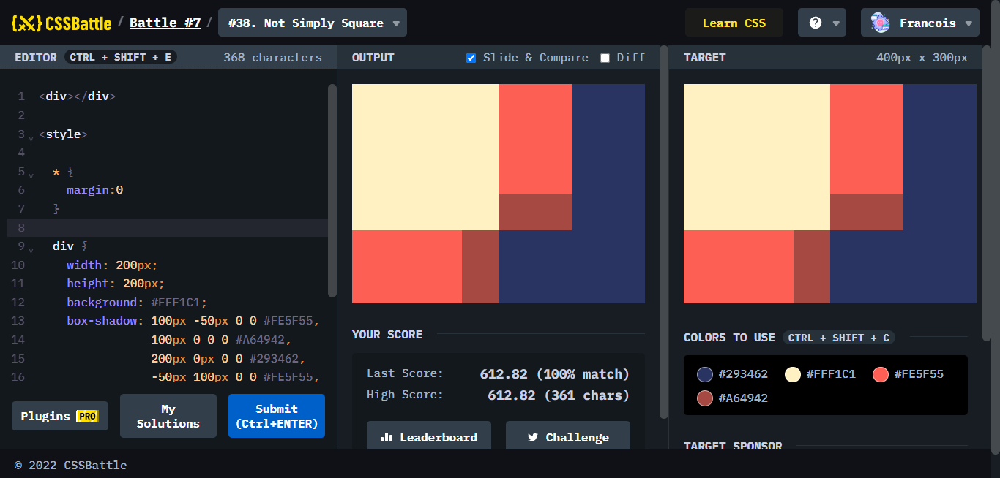

Battle #7 - Backface
Battle.7では、9問が出題されていて、少し複雑な問題が増えているように見受けられます。難易度はどのようになっているのかみてみましょう。
#33. Birdie
ポイント
円、半円、扇形の3パターンを今までやってきた中で覚えていますかと問われているような問題。border-radiusの調節で解決。
#34. Christmas Tree
ポイント
三角形の作り方がポイントでジェネレーターを用いてもいいと思うが、どのような原理で出来るかはおさえておくべきだと思った。
#35. Ice Cream
ポイント
ひとつずつパーツごとに分けて作成した。工夫の仕方についてはいくらでもありそうだと感じた。
#36. Interleaved
ポイント
box-shadowを使った典型的な問題。もう何度かしている。
#37. Tunnel
ポイント
正方形を作り、transform:rotateによって回転させている。
#38. Not Simply Square

ポイント
box-shadowで、作っていくが少しだけ応用が必要であると感じた。ひとつの基準を作った時に、その基準をどのように配置させると課題の形になるか考えないといけなかったため、パズルをしている感覚だった。
#39. Sunset

ポイント
最初は、背景色で作った四角の上に、黄色の三本線を描き、その四角でoverflow:hiddenをかけて、先端を丸めようとしたが、うまくいかなかった。そのため時間がかかってしまった。大きなborderで作った中身のある円を外側に背景色で追加したところ、あっさりできてしまい時間のロスを招く結果となった。前者の方法でうまくいった方はご教示願います。
#40. Letter B
ポイント
borderと、個々で指定するborder-○○(向き)を用いて背景色で消すことによって、丸みの部分を作り出せば後はできる。
#41. Fox Head
ポイント
きつねのあごの部分をどのようにすれば実現できるのかについて試行錯誤した結果、意外と時間がかかった。これも背景色で消すことによってできる。